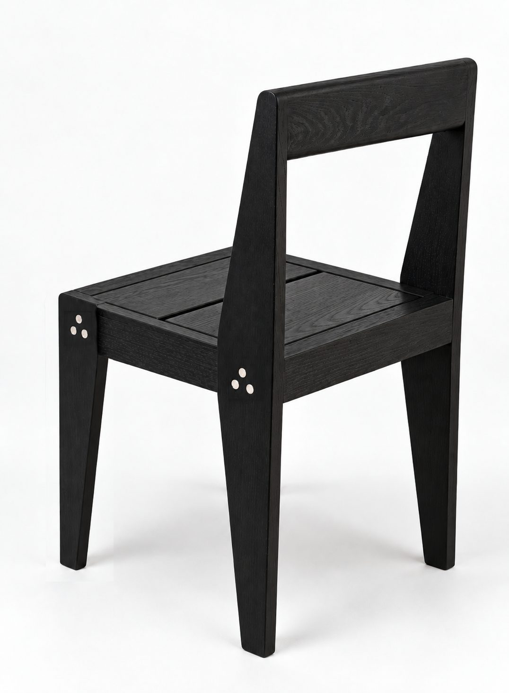
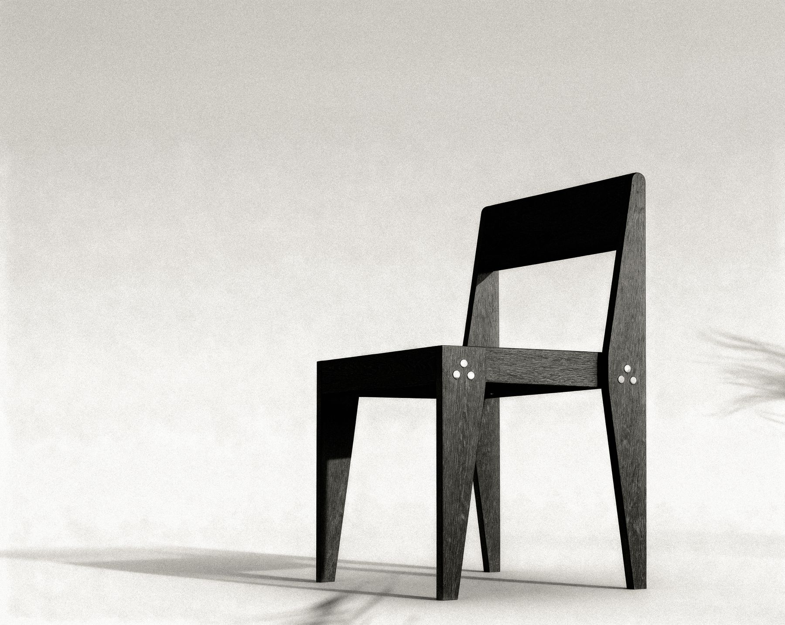
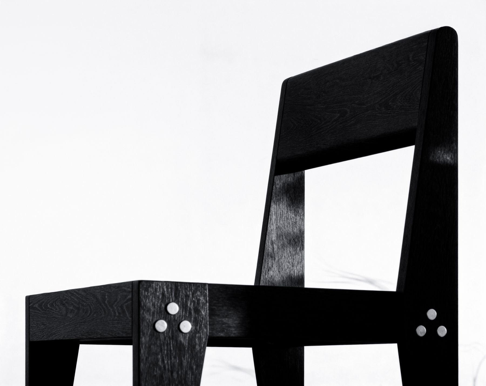
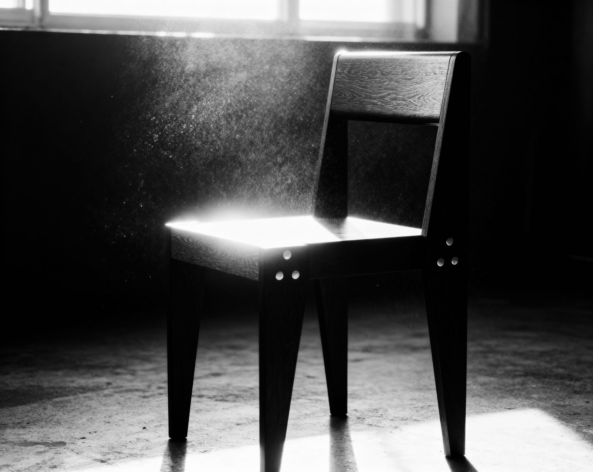
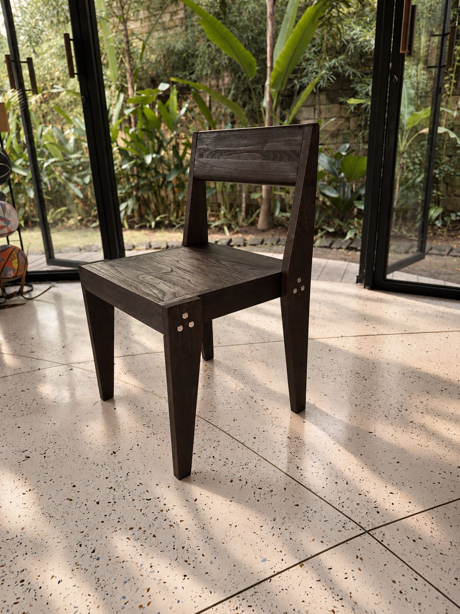
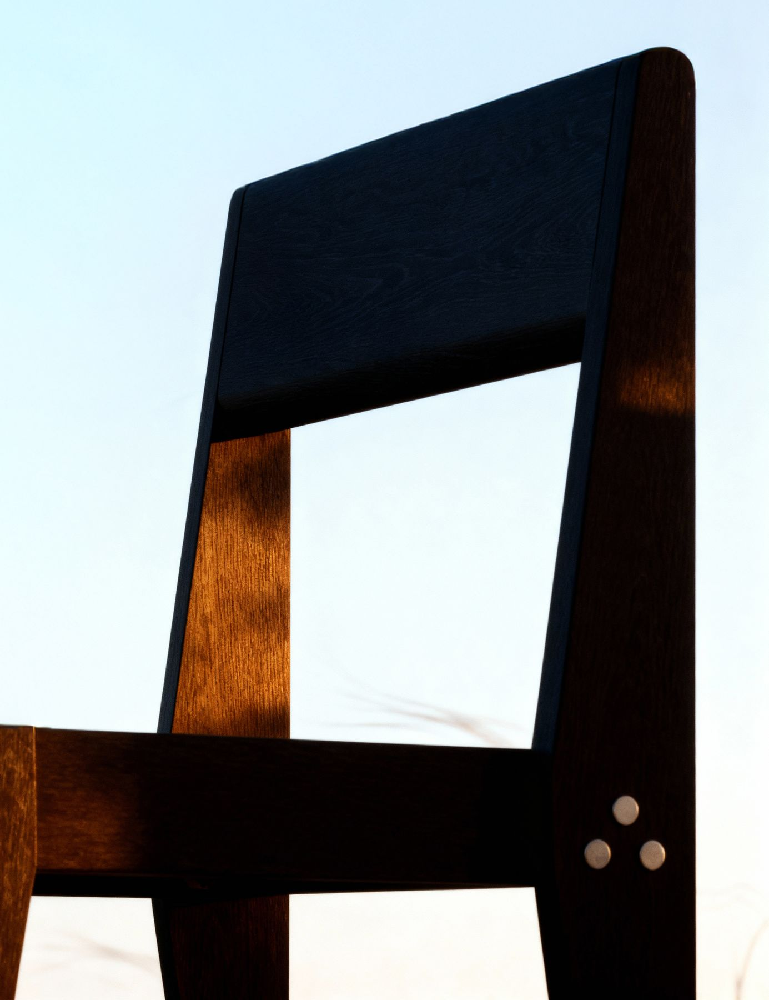

The Chair
A knock-down dining chair in repurposed teak. It travels flat, goes together on site and is designed to be repaired for decades rather than replaced.

- Collection
- SATU
- Category
- Chair
- Dimensions
- H 80 / W 45 / L 45 cm
- Seat height
- 45 cm
- Material
- Repurposed teak, often from old joglo houses
- Finish
- Shou Sugi Ban: flame-darkened teak, finished with natural oil.
- Construction
- Modular and knock-down. Assembled on site
- Use
- Dining rooms, restaurants and terraces
- Made in
- Indonesia
- Price
- On request. Ex works, Indonesia
- Shipping
- Flat-packed, assembled on site
About The Chair.
The first piece we designed, and the one the rest of SATU grew from.
The bolts are part of the look. Three-bolt clusters at the seat and leg joints hold the frame and let it be taken apart again.
Every component can be replaced on its own. A broken leg is a new leg, not a new chair.
Like every Another Life piece, it is made from timber that already had a first life. Holes and marks from that life are left natural and never filled with glue, and only where they don't reduce strength.





Six questions, answered for this piece.
Where did the material come from?
Who made it?
How was it transported?
Can it be repaired?
Can parts be replaced?
What happens at the end of its first life?
Each piece will carry a QR code linking to its record. About the Passport
Last updated 2026-10-08